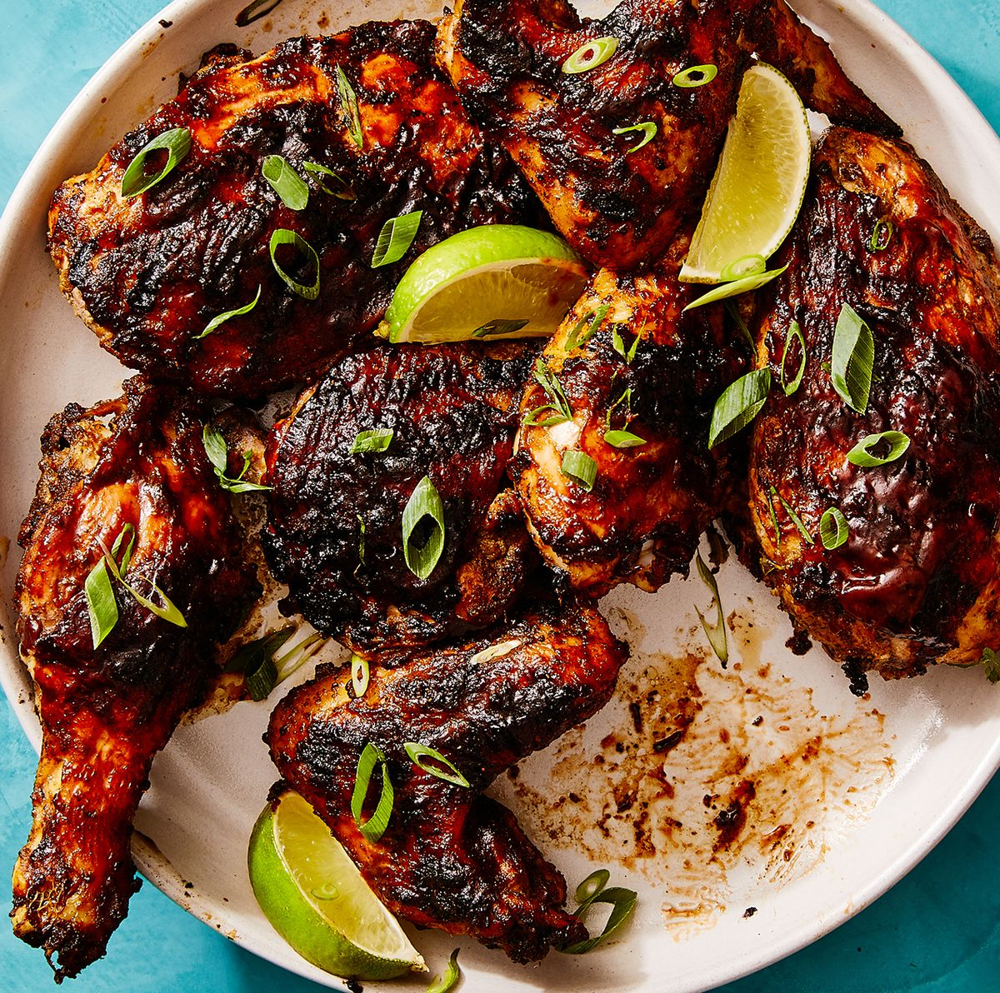

Jerk Chicken

Caribbean Jerk Chicken
Jerk marinated chicken in a seasoning mixture dominated by spices and chiles, then grilled or BBQ'd.
Ingredients:
- medium onion, coarsely chopped
- medium scallions, chopped
- Scotch bonnet chiles, chopped
- garlic cloves, chopped
- tablespoon five-spice powder
- tablespoon five-spice powder
- tablespoon five-spice powder
- tablespoon five-spice powder
- tablespoon allspice berries, coarsely ground
- tablespoon coarsely ground black pepper
- teaspoon dried thyme, crumbled
- teaspoon freshly grated nutmeg
- teaspoon kosher salt
- 1/2 cup soy sauce
- 1 tablespoon vegetable oil
- (3 1/2 to 4-pound) chickens, quartered
Steps:
- In a food processor, combine the onion, scallions, chiles, garlic, five-spice powder, allspice, pepper, thyme, nutmeg, and salt; process to a coarse paste. With the machine on, add the soy sauce and oil in a steady stream. Pour the marinade into a large, shallow dish, add the chicken, and turn to coat. Cover and refrigerate overnight. Bring the chicken to room temperature before proceeding.
- Light a grill. Grill the chicken over a medium-hot fire, turning occasionally, until well browned and cooked through, 35 to 40 minutes. (Cover the grill for a smokier flavor.) Transfer the chicken to a platter and serve.